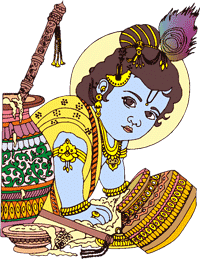

Indian Mythology Stories for Kids | Hindu Mythological Stories
Myths and legends are an integral part of human existence. They have been around us all the
time. Though their validity is susceptible, nobody seems to mind as they stand as a proof of the
human belief in divine powers. Here we bring to you a collection of popular mythological stories
that will take you to times of yore when gods co-habited with humans, divine voices could be
heard and visions seen. Know more about deities you worship every day. Indian mythology contains
a vast array of ancient tales that are exciting, entertaining, and packed with moral lessons.
Know about the extraordinary sacrifices made and great feats achieved.
The recent findings suggest that most of these stories are not mythology, but are actually ancient Indian and Hindu civilization history. For example, all the places mentioned in Ramayana and Mahabharata exist in perfect order, and many carry artifacts from that period, as described in the epics. Lord Krishna's city, Dwarka, which the epic Mahabharata said was submerged in the seas, is of much interest these days, as ruins of the same have been found underwater. This page is a collection of the most important and interesting Hindu Mythology Stories.
The recent findings suggest that most of these stories are not mythology, but are actually ancient Indian and Hindu civilization history. For example, all the places mentioned in Ramayana and Mahabharata exist in perfect order, and many carry artifacts from that period, as described in the epics. Lord Krishna's city, Dwarka, which the epic Mahabharata said was submerged in the seas, is of much interest these days, as ruins of the same have been found underwater. This page is a collection of the most important and interesting Hindu Mythology Stories.
Hindu Mythology Stories for Kids
Stories of Shri Krishna
Lord Krishna, the eighth avatar of Lord Vishnu, is a revered figure in Hindu mythology. His story is
rich with divine miracles and teachings that continue to inspire millions of people worldwide. Here
is a
brief summary of Lord Krishna's story:
Krishna was born in Mathura to King Vasudeva and Queen Devaki. However, fearing the prophecy that Devaki's eighth child would be his downfall, King Kamsa, Devaki's brother, imprisoned them and killed their children. Krishna's father secretly transported him to the village of Gokul, where he was raised by his foster parents, Nanda and Yashoda.
Krishna was born in Mathura to King Vasudeva and Queen Devaki. However, fearing the prophecy that Devaki's eighth child would be his downfall, King Kamsa, Devaki's brother, imprisoned them and killed their children. Krishna's father secretly transported him to the village of Gokul, where he was raised by his foster parents, Nanda and Yashoda.

In Gokul, Krishna grew up as a mischievous and playful child. He displayed divine powers, such as lifting the Govardhan Hill on his little finger to protect the villagers from torrential rains and defeating demons sent by Kamsa to kill him.
As he grew older, Krishna became known for his enchanting flute playing, which mesmerized both humans and animals alike. He also became renowned for his romantic escapades, particularly with the cowherd girls (Gopis), especially Radha. Their love symbolized the divine union of the soul with God.
Krishna played a vital role in the epic battle of Kurukshetra in the Hindu epic, Mahabharata. He served as the charioteer and counselor to Arjuna, one of the Pandava princes. During the battle, Krishna imparted profound wisdom through the Bhagavad Gita, a spiritual discourse that emphasized duty, righteousness, and the pursuit of self-realization.
Krishna's teachings emphasized the importance of devotion (bhakti) and love for God. He preached that true happiness lies in surrendering oneself to the divine and performing one's duties without attachment to the results.
Eventually, Krishna's earthly life came to an end when he was accidentally struck by an arrow. He left behind a legacy of spiritual enlightenment and eternal love. Lord Krishna's teachings continue to guide people on the path of righteousness and devotion to this day, making him an immortal figure in Hindu mythology.